AdaBoost
The Decision Trees tab built single trees to predict crashes from a vehicle's attributes and found only a weak signal. This tab asks whether hundreds of deliberately tiny trees, each correcting the last, can extract more from exactly the same data.
Overview
Boosting builds a strong model out of many weak ones by training them one after another, with each new model concentrating on the cases the earlier ones got wrong. It is easiest to understand by contrast with bagging, the idea behind random forests. Bagging draws many random samples of the training data, grows a full, independent tree on each, and lets them vote with equal weight; because the trees are built separately they can be built at the same time, and averaging them mainly reduces variance. Boosting is sequential: tree two cannot be built until tree one exists, because tree two is trained on data reweighted by tree one's mistakes. Each model is weak on its own, and boosting mainly reduces bias by adding them up.
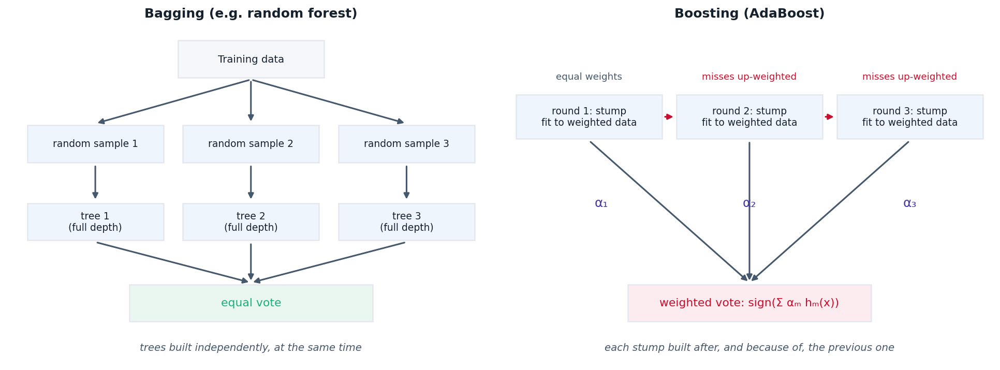
AdaBoost (adaptive boosting) is the original boosting algorithm, and here its weak learners are decision stumps: trees with a single split, one question with two answers, such as "is the complaint about airbags?". A stump on its own is barely better than guessing, which is the point. Training proceeds in rounds:
- Start with a weight on every training row. Here the weights are balanced so that the 4.7% of crash rows carry half the total weight, the same correction the Part 3 tree used.
- Fit a stump that minimises the weighted error, so rows with large weights count for more.
- Score the stump. Its weight in the final vote is αm = learning rate × ln((1 − error) / error). A stump with low weighted error earns a large α; a stump no better than a coin flip, at error 0.5, earns α = 0 and is ignored; a stump worse than chance gets a negative α, so its vote is reversed.
- Reweight the rows. Every row the stump got wrong has its weight multiplied by eα, then all weights are rescaled to sum to one. Misclassified rows therefore grow, and the next stump is forced to pay attention to them.
- Repeat for the chosen number of rounds.
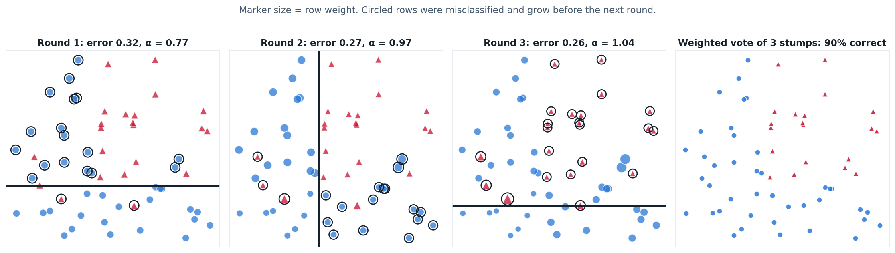
The final prediction is a weighted vote: every stump votes +1 for Crash or −1 for No crash, each vote is multiplied by that stump's α, and the votes are summed. A positive total means Crash. Accurate stumps therefore have a larger say than marginal ones. The total can also be compared against a cut-off other than zero, which turns out to matter on this data. The learning rate scales every α down: a smaller rate means each stump changes the ensemble less, so more rounds are needed, but the result is usually smoother.
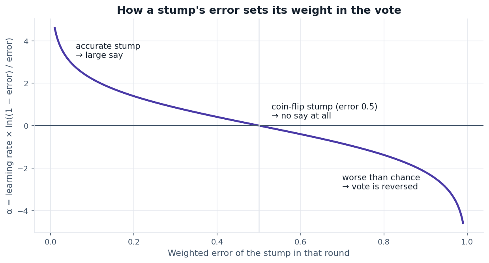
How it is used here. The task, the 29 features and the train/test split are identical to the Decision Trees tab: predict whether a complaint involved a crash from the vehicle's age, rating, rollover probability, equipment, recall count, body segment and the component involved, without reading the narrative. Keeping everything identical means any difference from the Part 3 tree is due to boosting alone.
Data Prep
AdaBoost is supervised, so it needs labelled data; the label is the crash field on the federal complaint form, exactly as before. Joining each complaint to its rated vehicle leaves 80,615 labelled complaints.
scikit-learn's AdaBoost, like its trees, accepts only numeric input.
Two of the eleven raw columns are text: the body segment (SUV, Sedan, Truck and
so on) and the component the complaint concerns. Both were converted with
one-hot encoding, which replaces one text column with one 0/1 column per
category: a Sedan complaint gets a 1 in seg_Sedan and 0 in every
other segment column. The component field has 41 categories, so the twelve
most common were kept and the rest grouped as cmp_OTHER to stop
the encoding from exploding. Nine numeric columns, seven segment columns and
thirteen component columns make 29 numeric features. The two images
below show the step itself.
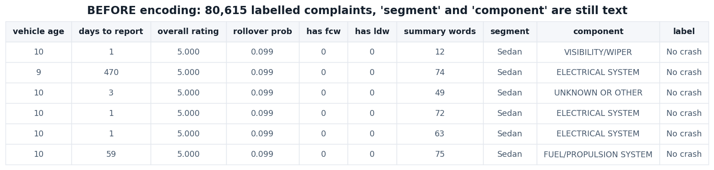
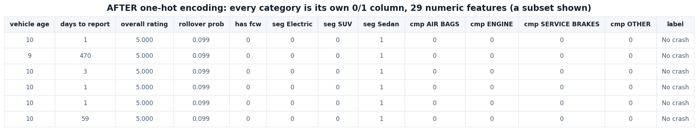
The train/test split is the Decision Trees split reproduced exactly: 75/25, stratified on the label, same seed, giving 60,461 training and 20,154 testing complaints, each with the same 4.72% crash rate. The code asserts that the sets share no rows and that the test set matches the Part 3 test set row for row. The two must be disjoint because a boosted model, given enough rounds, can fit its training rows almost perfectly; scoring it on those same rows would report a skill it does not have.
One more split was needed. AdaBoost has settings to choose, and choosing them on the test set would quietly turn the test set into training data. So 20% of the training set was held back as a validation set, stratified the same way: the model was tuned by training on 48,368 rows and checking on 12,093, and the test set was used once, after every choice was fixed.
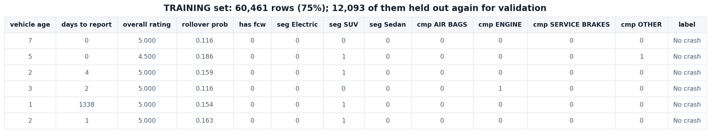
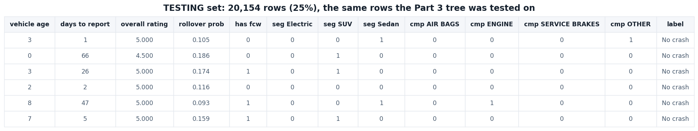
Data and code. Raw data: data/raw/ · Cleaned source tables: complaints_clean.csv.gz, vehicle_model_year.csv
Labelled data before encoding: ada_labeled_before_encoding.csv · after encoding: ada_labeled_encoded.csv · training sample: ada_train_sample.csv · testing sample: ada_test_sample.csv
Validation curves: ada_validation_curves.csv · chosen settings: ada_chosen_settings.csv · every stump and its alpha: ada_stumps.csv · test metrics: ada_results.csv
Code: adaboost_analysis.py · adaboost.ipynb
Code
The analysis is Python, in
adaboost_analysis.py, using
scikit-learn's AdaBoostClassifier with a
DecisionTreeClassifier(max_depth=1), a stump, as the weak learner.
Balanced starting weights are passed through sample_weight. Rather
than refitting for every number of rounds, each configuration is fitted once
with 400 rounds and staged_decision_function reads off the
ensemble's validation score after every round, which produces the complete
"performance as rounds are added" curve from a single fit. The Part 3 tree is
refitted on the same split with its original settings, and the script confirms
that it reproduces its published result before the two are compared.
Results
Tuning on the validation set
Three settings were tuned on the validation set: the number of rounds (1 to 400), the learning rate (0.1, 0.25, 0.5, 1.0) and the starting weights (balanced or uniform). The selection measure was validation average precision, the area under the precision–recall curve, which rewards a model for ranking crashes above non-crashes regardless of where the cut-off is drawn. Accuracy is shown alongside, as the rubric asks, but it cannot be the selection measure here: on a 4.7% class, the most accurate model is one that never predicts a crash.
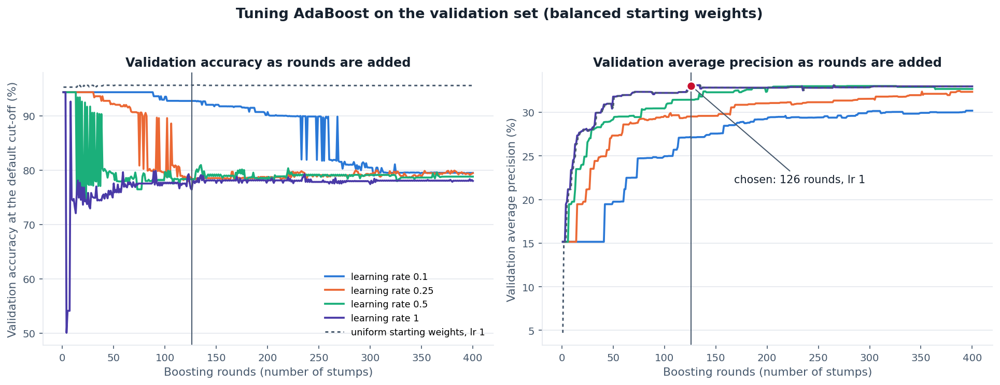
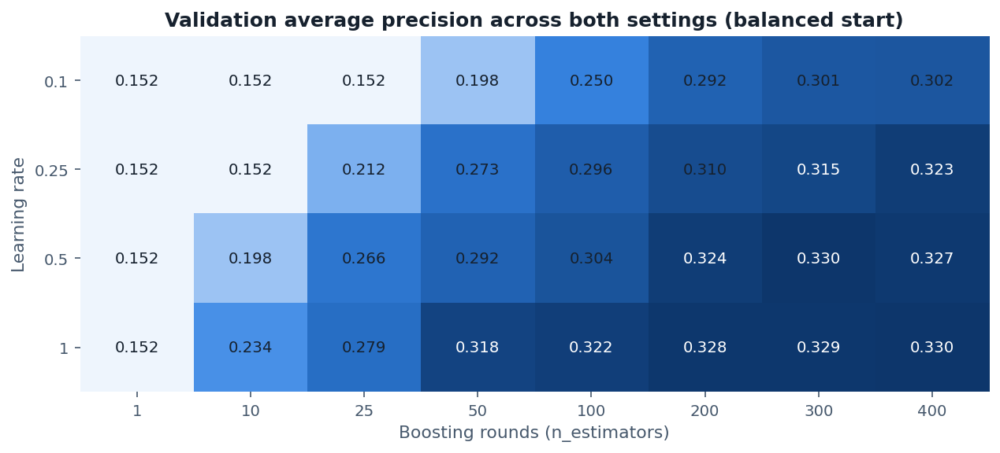
The best validation average precision, 0.331, was reached at learning rate 1.0 after 134 rounds. Among settings within 0.001 of that peak, the one with the fewest rounds was taken: balanced starting weights, learning rate 1.0, 126 stumps. Balanced and uniform starting weights reached the same peak; balanced simply gets there with a useful model from the very first round.
The curves exposed one more setting worth tuning. At the default cut-off of zero, the chosen model flags too many complaints: validation F1 is only 0.220. The cut-off on the weighted vote was therefore chosen on the same validation set as the value that maximises F1 on the Crash class.
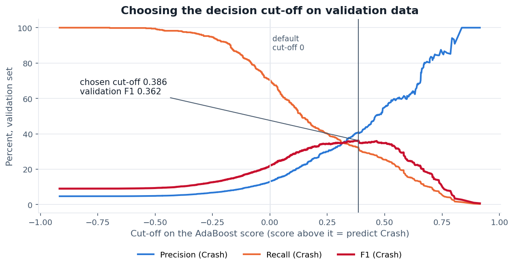
The held-out test, against the Part 3 decision tree
With every setting fixed, the model was refitted on all 60,461 training complaints and scored once on the test set.
| Model, same 20,154 test complaints | Accuracy | Precision (Crash) | Recall (Crash) | F1 (Crash) |
|---|---|---|---|---|
| AdaBoost: 126 stumps, learning rate 1.0, tuned cut-off | 94.81% | 0.428 | 0.294 | 0.349 |
| Part 3 decision tree (Gini, depth 3) | 88.22% | 0.199 | 0.495 | 0.284 |
| A single stump on its own | 94.48% | 0.390 | 0.300 | 0.339 |
| AdaBoost at the default cut-off of 0 | 78.34% | 0.135 | 0.664 | 0.224 |
| Majority-class baseline | 95.28% | 0.000 | 0.000 | 0.000 |
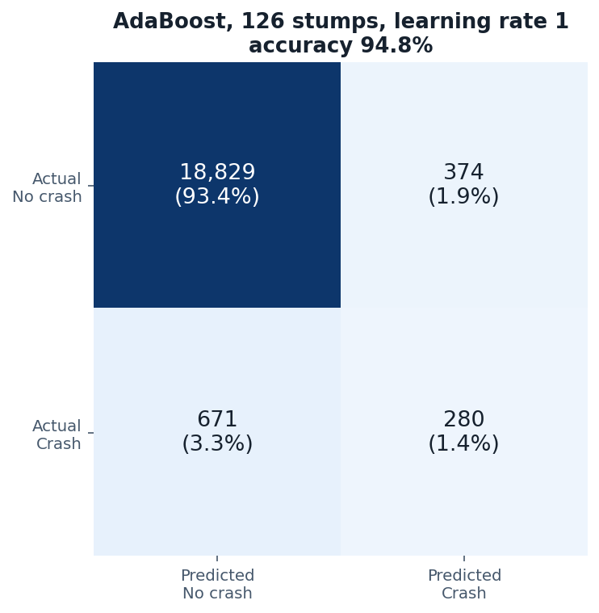
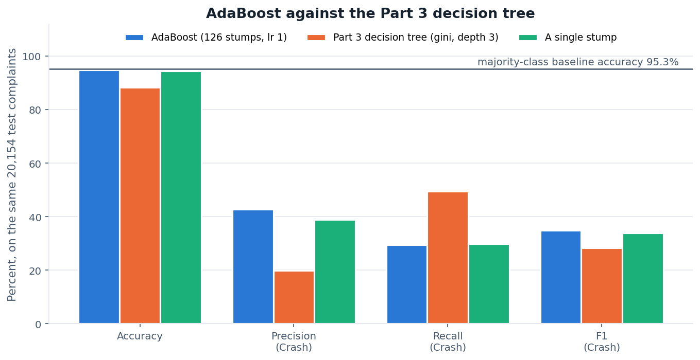
AdaBoost beats the Part 3 decision tree. F1 on the crash class rises from 0.284 to 0.349, a gain of 0.065 or about 23%. Accuracy rises from 88.22% to 94.81%, 6.6 points higher, and precision more than doubles, from 0.199 to 0.428: of the complaints AdaBoost flags, 43% genuinely involve a crash, against 20% for the tree. The tree still finds more crashes, 50% against 29%, because its reweighted classes push it to flag 2,364 complaints where AdaBoost flags 654. Neither model clears the 95.28% majority-class baseline on accuracy, which is a reminder of how little the vehicle's own attributes reveal about any single incident.
The most telling row is the single stump. One question — is this complaint about airbags? — reaches an F1 of 0.339, within 0.01 of the 126-stump ensemble. Boosting does improve the model's ability to rank complaints by risk, doubling validation average precision from 0.15 to 0.33, but at the chosen cut-off almost all the usable signal was already in the first split. The last row shows why the cut-off had to be tuned: with balanced weights and the default cut-off, the same 126 stumps flag nearly a quarter of all complaints and fall to an F1 of 0.224.
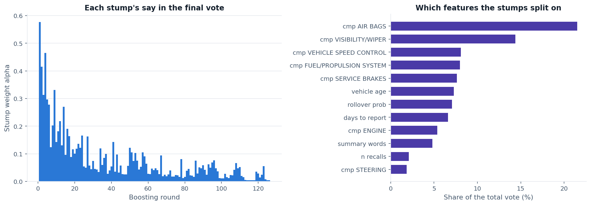
Conclusions
Boosting extracted more from the vehicle's attributes than a single tree could, but not much more than one well-chosen question. That is the most useful thing this tab says about vehicle safety. Whether an owner's problem ended in a crash depends overwhelmingly on which part of the vehicle failed, and above all on whether it was the airbags — a part that is often complained about precisely because it was called on in a collision. Once that question has been asked, the vehicle's age, its crash-test rating, its rollover probability and its standard equipment add only small refinements.
The stumps also show which attributes carry the remaining signal, and the crash-test rating is not among the leaders. Visibility and wiper faults, speed control, fuel systems and brakes come next, followed by the vehicle's age and rollover probability. These are the parts whose failure plausibly leads to a collision: a driver who cannot see, cannot control speed, or cannot stop. The overall star rating, the number on the window sticker, earned less than 1% of the total vote.
The practical comparison with the Part 3 tree is about false alarms. The tree caught half of all crashes but was wrong four times for every crash it found; AdaBoost catches fewer, but more than two in five of the complaints it flags genuinely involve a crash. For anyone triaging a large volume of reports with limited time, that is the more useful tool. For anyone who must not miss a crash, neither model built on vehicle attributes is good enough, and the narrative-based classifier on the Regression tab, which finds two crashes in three with five in six of its flags correct, is the better choice by a wide margin.